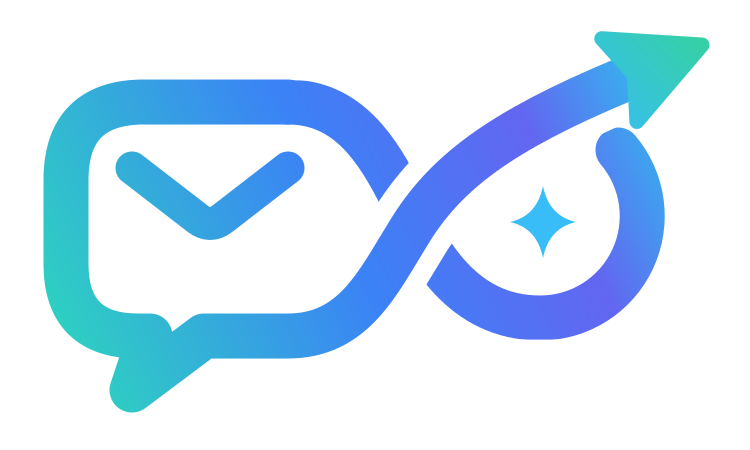
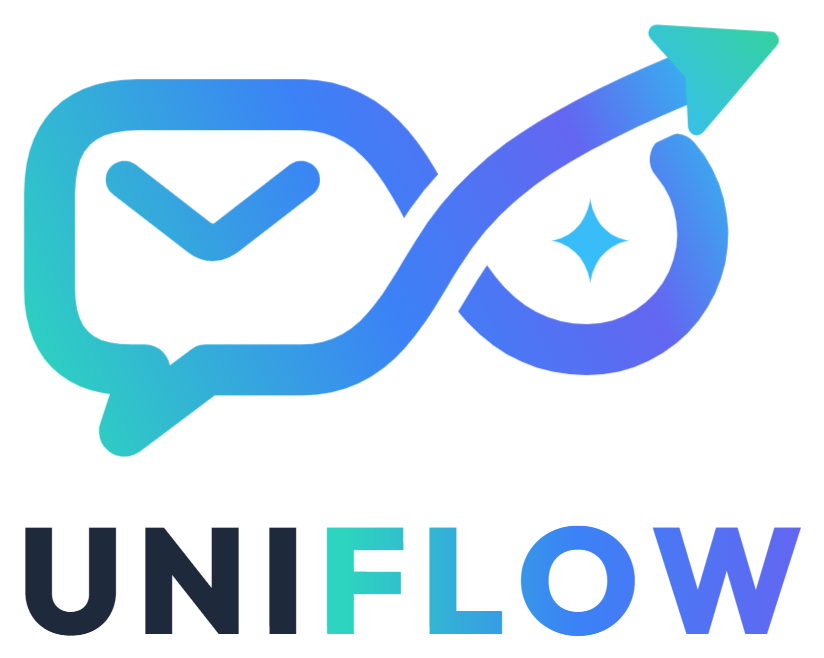

Timeline dei progetti
Messaggi, file, riunioni e scadenze di ogni cliente in ordine cronologico.

UniFlow
Email, WhatsApp e file in un'unica piattaforma intelligente. Dal caos al flusso.
Email, WhatsApp e file in un'unica app, con filtri avanzati.
Alta, media o bassa: capisci subito cosa è urgente.
I messaggi lunghi diventano poche righe.
Le scadenze lette nei messaggi finiscono nel calendario.
UniFlow legge email e messaggi, riconosce quelli importanti, trova date e orari, li segna nel calendario e ti avvisa prima della scadenza.
email e messaggi WhatsApp
importanza, date e orari
l'impegno nel calendario
prima della scadenza
Scrivi un messaggio con una data, ad esempio: "Riunione con il cliente venerdì alle 10:30"
In meno di un minuto, come UniFlow trasforma il caos in un flusso ordinato.
Messaggi, file, riunioni e scadenze di ogni cliente in ordine cronologico.
Raccoglie in automatico tutte le attività che richiedono un'azione.
Scadenze imminenti, attività completate e file importanti a colpo d'occhio.
Tag e categorie per trovare qualsiasi messaggio o file in pochi secondi.
Ti segnala se un file importante non è ancora stato visualizzato.
Integrazione professionale con backup, filtri e smistamento automatico.
L'app propone note utili in base al contenuto di ogni messaggio.
Account per ogni dipendente e chat interne tracciate, anche da remoto.
Nelle aziende le comunicazioni sono spesso frammentate tra e-mail, messaggi, documenti e chat, causando confusione e perdita di informazioni importanti. I dipendenti devono continuamente cercare file, conversazioni e scadenze attraverso diverse app o strumenti, perdendo tempo e riducendo l'efficienza.
Questa applicazione nasce per risolvere questi problemi, offrendo un sistema unico che raccoglie, organizza e gestisce tutte le comunicazioni aziendali in modo semplice, ordinato e automatico.